WorldSkills
Competing for Malaysia
From February 2023 to September 2024, I trained and competed as Malaysia's representative in IT Software Solutions for Business under Jabatan Pembangunan Kemahiran (JPK) — a journey through three international competitions on three stages.
Bronze Medal
WorldSkills ASEAN — Singapore
2023
Bronze Medal
WorldSkills Asia — Abu Dhabi
2023
Medallion for Excellence
47th WorldSkills — Lyon, France
2024
Preparation
Training like it's the real thing
WorldSkills isn't a coding contest — it's a full software delivery marathon. Each competition compresses the entire development lifecycle into timed modules: requirements analysis, system design, database modeling, implementation, testing, and deployment. Training meant building complete business applications in .NET Core and MSSQL, over and over, against the clock — then reviewing every decision to shave minutes and eliminate mistakes.
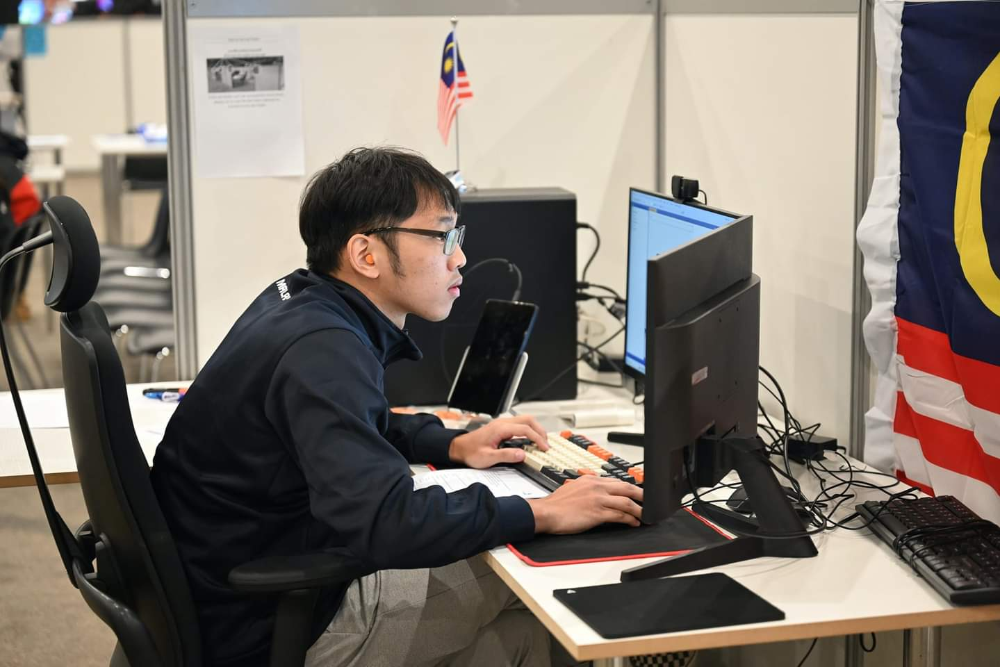
The Journey
Three stages, three lessons
Singapore 2023 — WorldSkills ASEAN. My first taste of international competition. Learning to perform under observation, manage nerves, and trust preparation. Result: Bronze Medal.
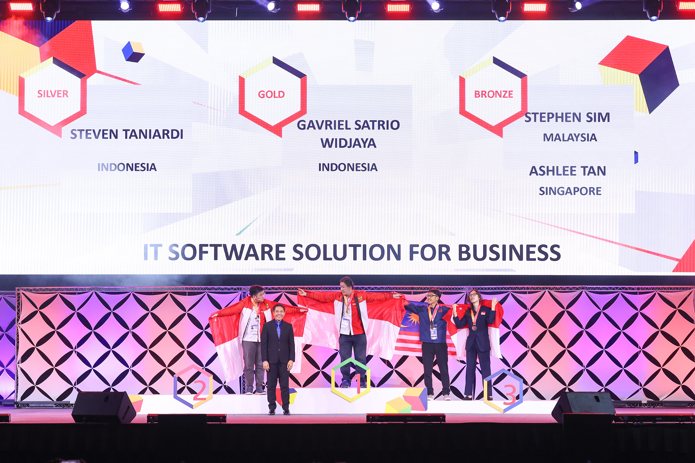
Abu Dhabi 2023 — WorldSkills Asia. A bigger stage and stronger field. I refined my speed-versus-correctness trade-offs and my module time management. Result: Bronze Medal.
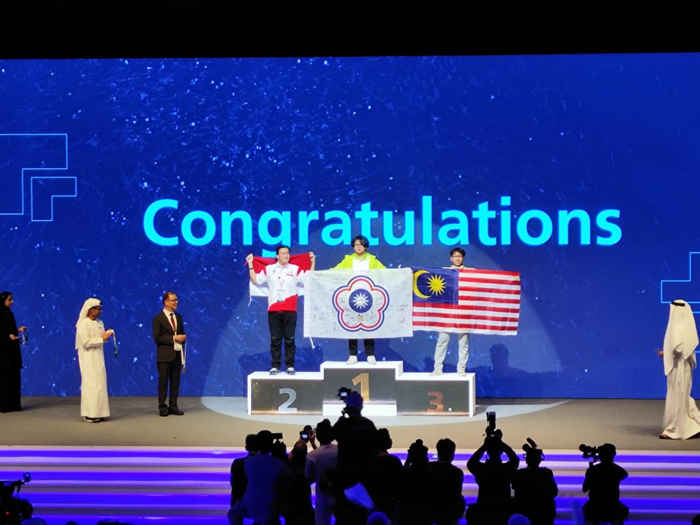
Lyon 2024 — the 47th WorldSkills. The world final, with the best young developers from every continent. Four days of competition modules in front of thousands of spectators. Result: Medallion for Excellence — awarded for meeting the international standard of excellence.
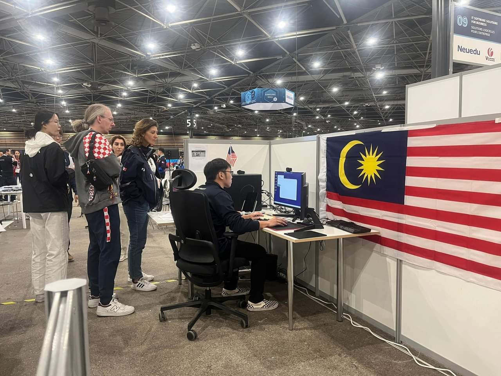
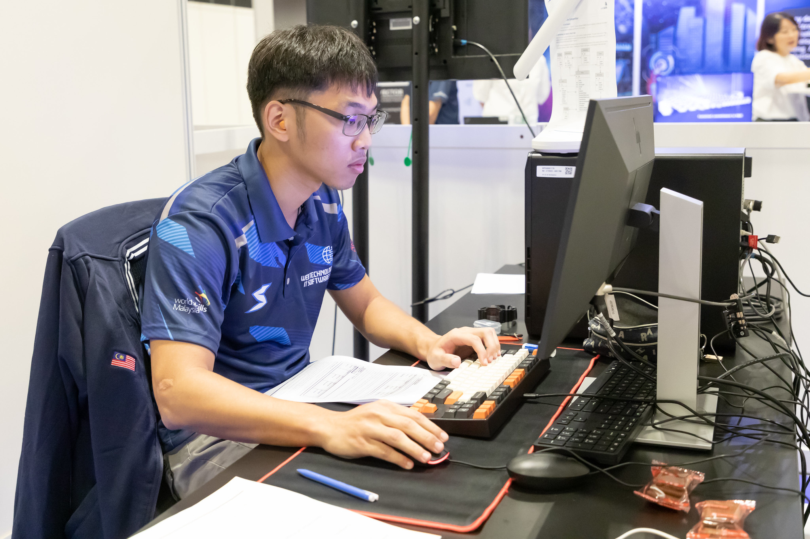
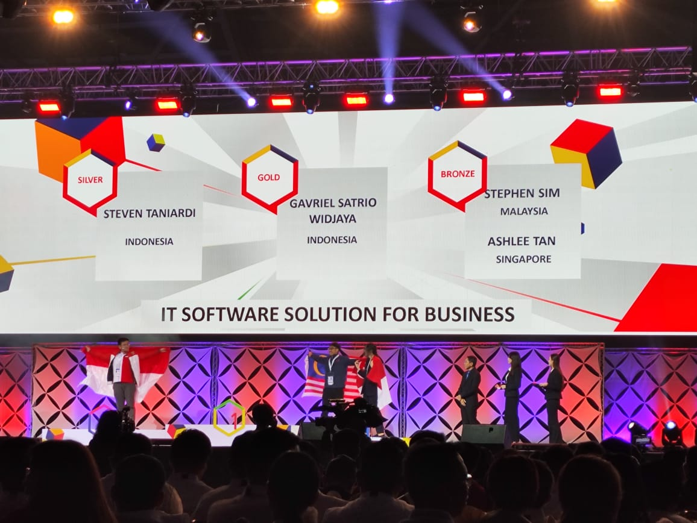
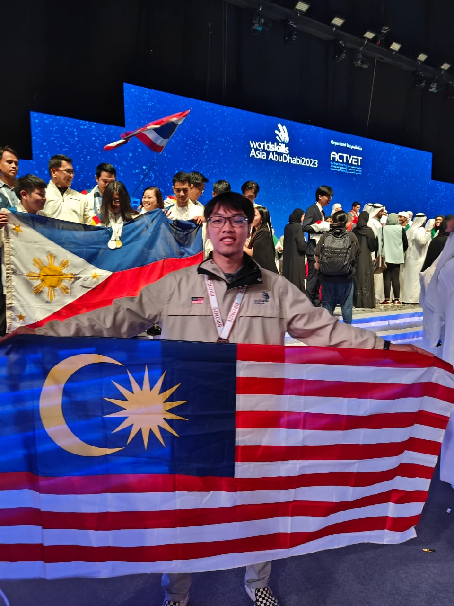
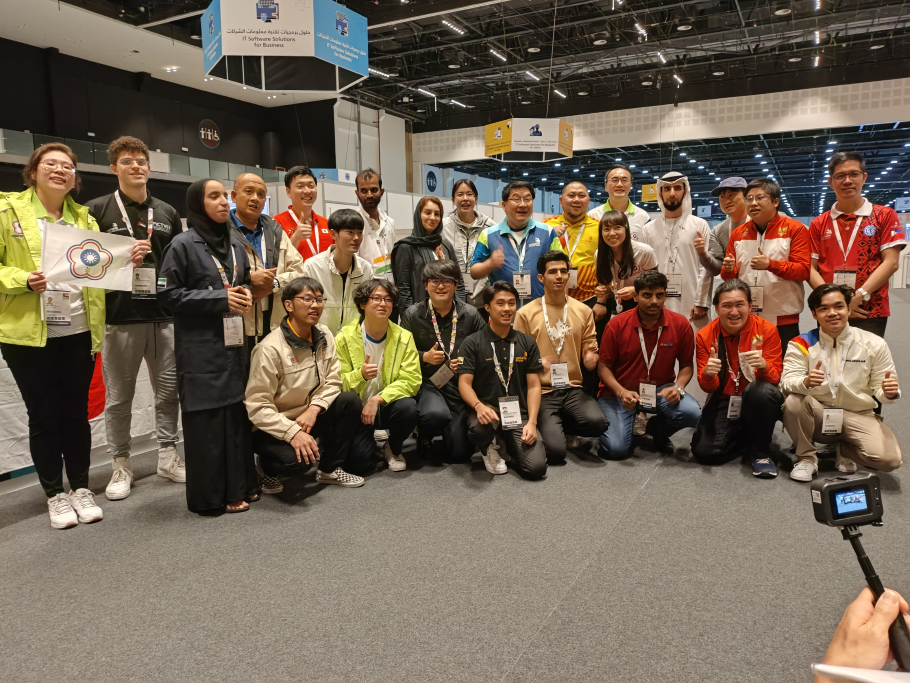
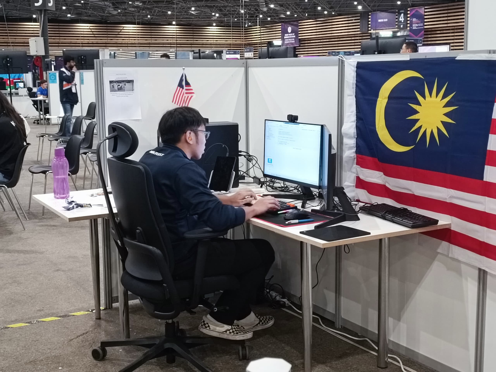
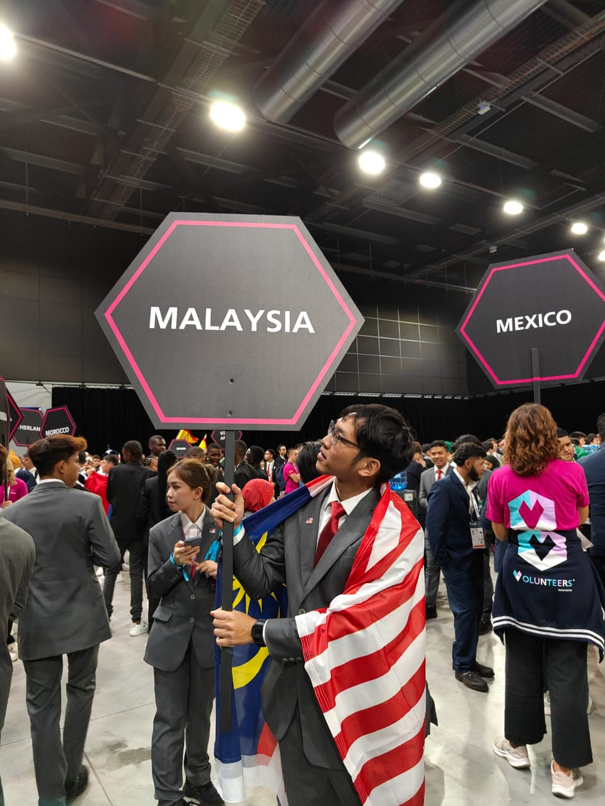
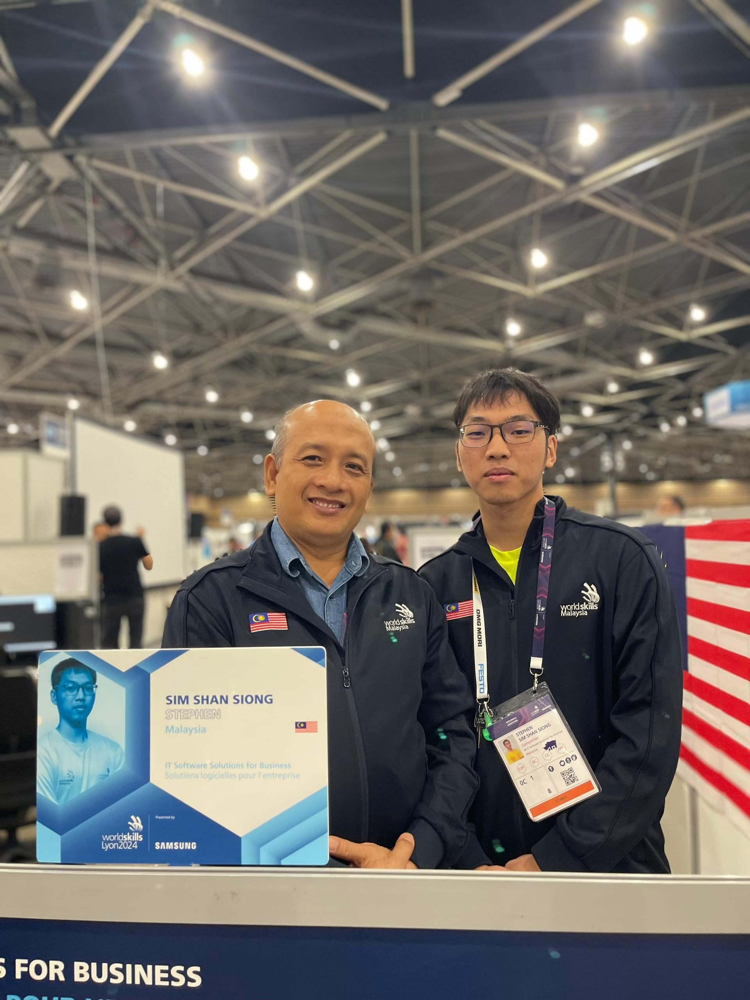
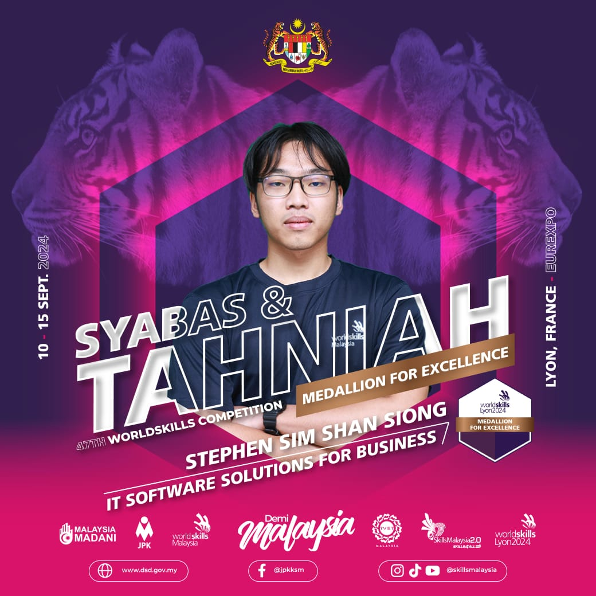
Takeaways
What competition taught me
Pressure is a skill
Delivering working software with a countdown clock running rewires how you handle production incidents. Calm is trainable.
Scope ruthlessly
When time is fixed, scope is the only variable. Ship the core flow first; polish is a bonus, not a foundation.
Practice the whole pipeline
Speed comes from having done requirements-to-deployment so many times that nothing is novel on the day.
Standards matter
WorldSkills grades against an international standard, not against other competitors. Aim at the standard, not the field.